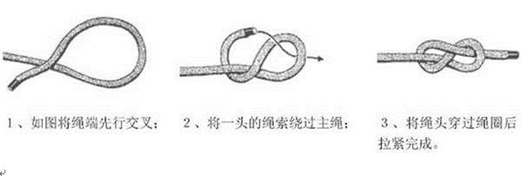

1. 单结（Overhand Knot）
简介：又名半结，所有绳结的基本结。
用途：来作临时绳端结使用，防止滑动。
2. 水结（Water Knot）
简介：又名扁带结，连接两条同样粗细的绳子。
用途：水结较常使用在散扁带的连接上，可利用单根扁带在冰镐上制作腕带，需经常检查水结的牢固度。
3. 渔人结（Fisherman’s Knot）
简介：又名英式结，容易打，且非常牢固。
用途：可以连接不同粗细的绳子。
双渔人结（Double Fisherman’s Knot）：又名葡萄藤结。
用途：用于连接不同或相同粗细的绳索，国内一般使用双同样粗细、同样质材的
绳索。因结型过大不适用于粗绳。利用双渔人结可做绳圈（使用6mm辅绳制作）
，利用渔人结加单结可做单只脚的脚套配合上升器用于上升。下降距离过长时，
可以利用双渔人结将两条绳索连接使用。
4. 8字结（Figure-eight Knot）
单8字结（Single Figure-eight Knot）
简介：打法简单，易记。
用途：可作为一条绳上的临时或简单中止，制动点；

双8字结（Double Figure-eight Knot）
简介：又名8字圈（套）结，结实、牢固。
用途：用于顶绳攀登时用锁扣连接安全带.此为目前攀岩最常用的绳结
编式8字结（Single Figure-eight Knot）
简介：又名登山8字结或8字空心结，牢靠持久。
用途：把登山绳系到护具上，可做绳套用。编式八字结的目的是为了作个固定的
绳圈用于连接安全带和封闭式的保护点如大树。

8字结末端防脱结
用途；以免绳子自动散开，防脱打完末尾还要留15cm-20cm余量。反穿绳环满
足两个指头的空间，以便攀登完成后打开绳结。
5. 平结（Reef Knot）
简介：又名方结，日常生活中使用较多，如捆扎东西或包扎伤口。
用途：仅适用于连接粗细和材质相同的两条绳子。但不适用在较粗、表面光滑的
绳索上。
秘诀：左搭右、右搭左。
6. 蝴蝶结（Butterfly Knot）
简介：又名工程结或中间结，两端承力，环不受力，容易解开。
用途：登山时（如结组）系在中间人的锁上或身上，也可用来挂东西，用途广泛。
绕绳法：
7. 称人结（Bowline）
简介：被称为绳结之王，宜结宜解，安全性高。为世界上最广为欢迎，于各种户外运动，甚至各行各业或日常生活中频繁的使用到。
用途：绳子系在其他物体或是在绳子末端结成一个圈时使用。
正统打法：（绳头加单结收尾）
单套式打法：（可调小绳圈）
结在它物上的打法：
变形称人结（或加优胜美地收尾结）：
对于登山者来说，优胜美地布林结最重要的优势在于方便，快捷，受力之后仍然很容易解开。而且节省绳子。
8. 双套结（Clove Hitch）
正统打法：
打法一：
打法二
简介︰所有绳结的基本结。其它绳结的开头和结束之用。
用途︰通常应用在两段施力均等的物品上，适用于水平拉力之下。防止滑动、或是在绳子未端绽开时可做为暂时防止继续脱线。
|